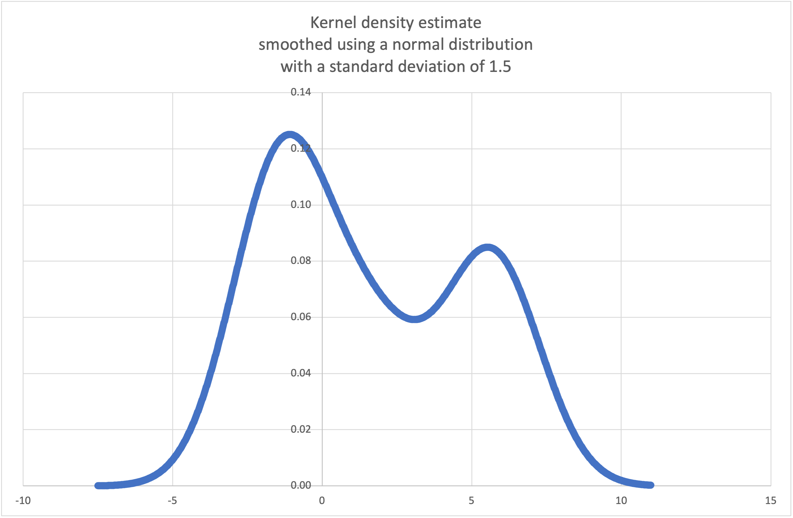

statistics — Funções estatísticas¶
Adicionado na versão 3.4.
Código-fonte: Lib/statistics.py
Esse módulo fornece funções para o cálculo de estatísticas matemáticas de dados numéricos (para valores do tipo Real).
O módulo não tem a intenção de competir com bibliotecas de terceiros como NumPy, SciPy, ou pacotes proprietários de estatísticas com todos os recursos destinados a estatísticos profissionais como Minitab, SAS e Matlab. Ela destina-se ao nível de calculadoras gráficas e científicas.
A menos que seja explicitamente indicado, essas funções suportam int, float, Decimal e Fraction. O uso com outros tipos (sejam numéricos ou não) não é atualmente suportado. Coleções com uma mistura de tipos também são indefinidas e dependentes da implementação. Se os seus dados de entrada consistem de tipos misturados, você pode usar map() para garantir um resultado consistente, por exemplo map(float, dado_entrada).
Alguns conjuntos de dados usam valores NaN (não um número) para representar dados ausentes. Como os NaNs possuem semântica de comparação incomum, eles causam comportamentos surpreendentes ou indefinidos nas funções estatísticas que classificam dados ou contam ocorrências. As funções afetadas são median(), median_low(), median_high(), median_grouped(), mode(), multimode() e quantiles(). Os valores NaN devem ser removidos antes de chamar estas funções:
>>> from statistics import median
>>> from math import isnan
>>> from itertools import filterfalse
>>> data = [20.7, float('NaN'),19.2, 18.3, float('NaN'), 14.4]
>>> sorted(data) # Isso tem um comportamento surpreendente
[20.7, nan, 14.4, 18.3, 19.2, nan]
>>> median(data) # Este resultado é inesperado
16.35
>>> sum(map(isnan, data)) # Número de valores em falta
2
>>> clean = list(filterfalse(isnan, data)) # Remove valores NaN
>>> clean
[20.7, 19.2, 18.3, 14.4]
>>> sorted(clean) # A classificação agora funciona como esperado
[14.4, 18.3, 19.2, 20.7]
>>> median(clean) # Este resultado é agora bem definido
18.75
Médias e medidas de valor central¶
Essas funções calculam a média ou o valor típico de uma população ou amostra.
Média aritmética dos dados. |
|
Média aritmética rápida de ponto flutuante, com ponderação opcional. |
|
Média geométrica dos dados. |
|
Média harmônica dos dados. |
|
Estima a distribuição de densidade de probabilidade dos dados. |
|
Amostragem aleatória do PDF gerado por kde(). |
|
Mediana (valor do meio) dos dados. |
|
Mediana inferior dos dados. |
|
Mediana superior dos dados. |
|
Mediana (50º percentil) dos dados agrupados. |
|
Moda (valor mais comum) de dados discretos ou nominais. |
|
Lista de modas (valores mais comuns) de dados discretos ou nominais. |
|
Divide os dados em intervalos com probabilidade igual. |
Medidas de espalhamento¶
Essas funções calculam o quanto a população ou amostra tendem a desviar dos valores típicos ou médios.
Desvio padrão populacional dos dados. |
|
Variância populacional dos dados. |
|
Desvio padrão amostral dos dados. |
|
Variância amostral dos dados. |
Estatísticas para relações entre duas entradas¶
Essas funções calculam estatísticas sobre relações entre duas entradas.
Covariância amostral para duas variáveis. |
|
Coeficientes de correlação de Pearson e Spearman. |
|
Inclinação e intersecção para regressão linear simples. |
Detalhes das funções¶
Nota: as funções não exigem que os dados estejam ordenados. No entanto, para conveniência do leitor, a maioria dos exemplos mostrará sequências ordenadas.
- statistics.mean(data)¶
Retorna a média aritmética amostral de data que pode ser uma sequência ou iterável.
A média aritmética é a soma dos dados dividida pela quantidade de dados. É comumente chamada apenas de “média”, apesar de ser uma das diversas médias matemáticas. Ela representa uma medida da localização central dos dados.
Se data for vazio, uma exceção do tipo
StatisticsErrorserá levantada.Alguns exemplos de uso:
>>> mean([1, 2, 3, 4, 4]) 2.8 >>> mean([-1.0, 2.5, 3.25, 5.75]) 2.625 >>> from fractions import Fraction as F >>> mean([F(3, 7), F(1, 21), F(5, 3), F(1, 3)]) Fraction(13, 21) >>> from decimal import Decimal as D >>> mean([D("0.5"), D("0.75"), D("0.625"), D("0.375")]) Decimal('0.5625')
Nota
A média é fortemente afetada por outliers (valor atípico) e não é necessariamente um exemplo típico dos pontos de dados. Para uma medida mais robusta, embora menos eficiente, de tendência central, veja
median().A média amostral fornece uma estimativa não enviesada da média populacional verdadeira, ou seja, quando a média é obtida para todas as possíveis amostras,
mean(sample)converge para a média verdadeira de toda população. Se data representa toda população ao invés de uma amostra, entãomean(data)é equivalente a calcular a verdadeira média populacional μ.
- statistics.fmean(data, weights=None)¶
Converte valores em data para ponto flutuante e calcula a média aritmética.
Essa função executa mais rapidamente do que a função
mean()e sempre retorna umfloat. data pode ser uma sequência ou iterável. Se o conjunto de dados de entrada estiver vazio, levanta uma exceçãoStatisticsError.>>> fmean([3.5, 4.0, 5.25]) 4.25
A ponderação opcional é suportada. Por exemplo, um professor atribui uma nota para um curso ponderando questionários em 20%, trabalhos de casa em 20%, um exame de meio de período em 30% e um exame final em 30%:
>>> grades = [85, 92, 83, 91] >>> weights = [0.20, 0.20, 0.30, 0.30] >>> fmean(grades, weights) 87.6
Se weights for fornecido, deve ter o mesmo comprimento que data ou uma
ValueErrorserá levantada.Adicionado na versão 3.8.
Alterado na versão 3.11: Adicionado suporte a weights.
- statistics.geometric_mean(data)¶
Converte valores em data para ponto flutuante e calcula a média geométrica.
A média geométrica indica a tendência central ou valor típico de data usando o produto dos valores (em oposição à média aritmética que usa a soma deles).
Levanta uma exceção
StatisticsErrorse a entrada do conjunto de dados for vazia, contiver um zero ou um valor negativo. data pode ser uma sequência ou iterável.Nenhum esforço especial é feito para alcançar resultados exatos. (Mas, isso pode mudar no futuro).
>>> round(geometric_mean([54, 24, 36]), 1) 36.0
Adicionado na versão 3.8.
- statistics.harmonic_mean(data, weights=None)¶
Retorna a média harmônica de data, uma sequência ou iterável de números de valor real. Se weights for omitido ou
None, então a ponderação igual é presumida.A média harmônica é a recíproca da média arimética calculada pela função
mean()dos recíprocos dos dados. Por exemplo, a média harmônica de três valores a, b e c será equivalente a3/(1/a + 1/b + 1/c). Se um dos valores for zero, o resultado também será zero.A média harmônica é um tipo de média, uma medida de localização central dos dados. Ela é geralmente apropriada quando se está calculando a média de razões e taxas; por exemplo, velocidades.
Suponha que um carro viaje 10 km a 40 km/h, e em seguida viaje mais 10 km a 60 km/h. Qual é a velocidade média?
>>> harmonic_mean([40, 60]) 48.0
Suponha que um carro viaja a 40 km/h por 5 km e, quando o trânsito melhora, acelera para 60 km/h pelos 30 km restantes da viagem. Qual é a velocidade média?
>>> harmonic_mean([40, 60], weights=[5, 30]) 56.0
StatisticsErroré levantada se data for vazio, qualquer elemento for menor que zero, ou se a soma ponderada não for positiva.O algoritmo atual tem uma saída antecipada quando encontra um zero na entrada. Isso significa que as entradas subsequentes não tem a validade testada. (Esse comportamento pode mudar no futuro.)
Adicionado na versão 3.6.
Alterado na versão 3.10: Adicionado suporte a weights.
- statistics.kde(data, h, kernel='normal', *, cumulative=False)¶
Estimativa de densidade por Kernel (KDE): Cria uma função de densidade de probabilidade contínua ou uma função de distribuição cumulativa a partir de amostras discretas.
A ideia básica é suavizar os dados usando uma função kernel. para ajudar a tirar inferências sobre uma população a partir de uma amostra.
O grau de suavização é controlado pelo parâmetro de escala h, que é chamado de largura de banda. Valores menores enfatizam características locais, enquanto valores maiores dão resultados mais suaves.
O kernel determina os pesos relativos dos pontos de dados da amostra. Geralmente, a escolha do formato de kernel não importa tanto quanto o parâmetro de suavização de largura de banda mais influente.
Os kernels que dão algum peso a cada ponto de amostra incluem normal (gauss), logistic e sigmoid.
Os kernels que apenas dão peso aos pontos de amostra dentro da largura de banda incluem rectangular (uniform), triangular, parabolic (epanechnikov), quartic (biweight), triweight e cosine.
Se cumulative for verdadeiro, retornará uma função de distribuição cumulativa.
Uma
StatisticsErrorserá levantada se a sequência de dados em data estiver vazia.A Wikipédia tem um exemplo onde podemos usar
kde()para gerar e plotar uma função de densidade de probabilidade estimada a partir de uma pequena amostra:>>> sample = [-2.1, -1.3, -0.4, 1.9, 5.1, 6.2] >>> f_hat = kde(sample, h=1.5) >>> xarr = [i/100 for i in range(-750, 1100)] >>> yarr = [f_hat(x) for x in xarr]
Os pontos em
xarreyarrpodem ser usados para fazer um gráfico PDF:
Adicionado na versão 3.13.
- statistics.kde_random(data, h, kernel='normal', *, seed=None)¶
Retorna uma função que faz uma seleção aleatória da função de densidade de probabilidade estimada produzida por
kde(data, h, kernel).Fornecer uma seed permite seleções reproduzíveis. No futuro, os valores podem mudar um pouco conforme estimativas de funções de distribuição acumulada (CDF) inversas de kernel mais precisas forem implementadas. seed pode ser um inteiro, float, str ou bytes.
Uma
StatisticsErrorserá levantada se a sequência de dados em data estiver vazia.Continuando o exemplo de
kde(), podemos usarkde_random()para gerar novas seleções aleatórias a partir de uma função de densidade de probabilidade estimada:>>> data = [-2.1, -1.3, -0.4, 1.9, 5.1, 6.2] >>> rand = kde_random(data, h=1.5, seed=8675309) >>> new_selections = [rand() for i in range(10)] >>> [round(x, 1) for x in new_selections] [0.7, 6.2, 1.2, 6.9, 7.0, 1.8, 2.5, -0.5, -1.8, 5.6]
Adicionado na versão 3.13.
- statistics.median(data)¶
Retorna a mediana (o valor do meio) de dados numéricos, usando o método comum de “média entre os dois do meio”. Se data for vazio, é levantada uma exceção
StatisticsError. data pode ser uma sequência ou um iterável.A mediana é uma medida robusta de localização central e é menos afetada por valores discrepantes. Quando a quantidade de pontos de dados for ímpar, o valor de meio é retornado:
>>> median([1, 3, 5]) 3
Quando o número de elementos for par, a mediana é calculada tomando-se a média entre os dois valores no meio:
>>> median([1, 3, 5, 7]) 4.0
Isso serve quando seus dados forem discretos e você não se importa que a média possa não ser um valor que de fato ocorre nos seus dados.
Caso os dados sejam ordinais (oferecem suporte para operações de ordenação) mas não são numéricos (não oferecem suporte para adição), considere usar a função
median_low()oumedian_high()no lugar.
- statistics.median_low(data)¶
Retorna a mediana inferior de dados numéricos. Se data for vazio, a exceção
StatisticsErroré levantada. data pode ser uma sequência ou um iterável.A mediana inferior sempre é um membro do conjunto de dados. Quando o número de elementos for ímpar, o valor intermediário é retornado. Se houver um número par de elementos, o menor entre os dois valores centrais é retornado.
>>> median_low([1, 3, 5]) 3 >>> median_low([1, 3, 5, 7]) 3
Use a mediana inferior caso seus dados forem discretos e você prefira que a mediana seja um valor que de fato existe nos seus dados ao invés de um valor interpolado.
- statistics.median_high(data)¶
Retorna a mediana superior de dados numéricos. Se data for vazio, a exceção
StatisticsErroré levantada. data pode ser uma sequência ou um iterável.A mediana superior sempre é um membro do conjunto de dados. Quando o número de elementos for ímpar, o valor intermediário é retornado. Se houver um número par de elementos, o maior entre os dois valores centrais é retornado.
>>> median_high([1, 3, 5]) 3 >>> median_high([1, 3, 5, 7]) 5
Use a mediana superior caso seus dados forem discretos e você prefira que a mediana seja um valor que de fato existe nos seus dados ao invés de um valor interpolado.
- statistics.median_grouped(data, interval=1.0)¶
Estima a mediana para dados numéricos que foram agrupados ou “binned” em torno dos pontos médios de intervalos consecutivos de largura fixa.
data pode ser qualquer iterável de dados numéricos com cada valor sendo exatamente o ponto médio de um bin. Pelo menos um valor deve estar presente.
interval é a largura de cada compartimento.
Por exemplo, as informações demográficas podem ter sido resumidas em grupos etários consecutivos de dez anos, com cada grupo sendo representado pelos pontos médios de cinco anos dos intervalos:
>>> from collections import Counter >>> demographics = Counter({ ... 25: 172, # 20 to 30 years old ... 35: 484, # 30 to 40 years old ... 45: 387, # 40 to 50 years old ... 55: 22, # 50 to 60 years old ... 65: 6, # 60 to 70 years old ... }) ...
O 50º percentil (mediana) é a 536ª pessoa de 1071 membros. Essa pessoa está na faixa etária de 30 a 40 anos.
A função regular
median()iria presumir que todos na faixa etária tricenariana tinham exatamente 35 anos. Uma suposição mais sustentável é que os 484 membros dessa faixa etária estão distribuídos uniformemente entre 30 e 40. Para isso, usamosmedian_grouped():>>> data = list(demographics.elements()) >>> median(data) 35 >>> round(median_grouped(data, interval=10), 1) 37.5
O chamador é responsável por garantir que os pontos de dados sejam separados por múltiplos exatos de intervalo. Isso é essencial para obter um resultado correto. A função não verifica essa pré-condição.
As entradas podem ser qualquer tipo numérico que possa ser convertido para um ponto flutuante durante a etapa de interpolação.
- statistics.mode(data)¶
Retorna o valor mais comum dos dados discretos ou nominais em data. A moda (quando existe) é o valor mais típico e serve como uma medida de localização central.
Se existirem múltiplas modas com a mesma frequência, retorna a primeira encontrada em data. Se ao invés disso se desejar a menor ou a maior dentre elas, use
min(multimode(data))oumax(multimode(data)). Se a entrada data é vazia, a exceçãoStatisticsErroré levantada.modepresume que os dados são discretos e retorna um único valor. Esse é o tratamento padrão do conceito de moda normalmente ensinado nas escolas:>>> mode([1, 1, 2, 3, 3, 3, 3, 4]) 3
A moda é única no sentido que é a única medida estatística nesse módulo que também se aplica a dados nominais (não-numéricos):
>>> mode(["red", "blue", "blue", "red", "green", "red", "red"]) 'red'
Somente entradas hasheáveis são suportadas. Para manipular o tipo
set, considere fazer a conversão parafrozenset. Para manipular o tipolist, considere fazer a conversão paratuple. Para entradas mistas ou aninhadas, considere usar este algoritmo quadrático mais lento que depende apenas de testes de igualdade:max(data, key=data.count).Alterado na versão 3.8: Agora lida com conjunto de dados multimodais retornando a primeira moda encontrada. Anteriormente, ela levantava a exceção
StatisticsErrorquando mais do que uma moda era encontrada.
- statistics.multimode(data)¶
Retorna uma lista dos valores mais frequentes na ordem em que eles foram encontrados em data. Irá retornar mais do que um resultado se houver múltiplas modas ou uma lista vazia se data for vazio.
>>> multimode('aabbbbccddddeeffffgg') ['b', 'd', 'f'] >>> multimode('') []
Adicionado na versão 3.8.
- statistics.pstdev(data, mu=None)¶
Retorna o desvio padrão populacional (a raiz quadrada da variância populacional). Veja os argumentos e outros detalhes em
pvariance().>>> pstdev([1.5, 2.5, 2.5, 2.75, 3.25, 4.75]) 0.986893273527251
- statistics.pvariance(data, mu=None)¶
Retorna a variância populacional de data, que deve ser uma sequência ou iterável não-vazio de números reais. A variância, o segundo momento estatístico a partir da média, é uma medida da variabilidade (espalhamento ou dispersão) dos dados. Uma variância grande indica que os dados são espalhados; uma variância menor indica que os dados estão agrupado em volta da média.
Se o segundo argumento opcional mu for fornecido, ele deve ser a média da população dos dados em data. Ele também pode ser usado para calcular o segundo momento em torno de um ponto que não é a média. Se estiver faltando ou for
None(o padrão), a média aritmética é calculada automaticamente.Use essa função para calcular a variância de toda a população. Para estimar a variância de uma amostra, a função
variance()costuma ser uma escolha melhor.Levanta
StatisticsErrorse data for vazio.Exemplos:
>>> data = [0.0, 0.25, 0.25, 1.25, 1.5, 1.75, 2.75, 3.25] >>> pvariance(data) 1.25
Se você já calculou a média dos seus dados, você pode passar o valor no segundo argumento opcional mu para evitar recálculos:
>>> mu = mean(data) >>> pvariance(data, mu) 1.25
Decimais e frações são suportadas:
>>> from decimal import Decimal as D >>> pvariance([D("27.5"), D("30.25"), D("30.25"), D("34.5"), D("41.75")]) Decimal('24.815') >>> from fractions import Fraction as F >>> pvariance([F(1, 4), F(5, 4), F(1, 2)]) Fraction(13, 72)
Nota
Quando os dados de entrada representarem toda a população, ele retorna a variância populacional σ². Se em vez disso, amostras forem usadas, então a variância amostral enviesada s², também conhecida como variância com N graus de liberdade é retornada.
Se de alguma forma você souber a verdadeira média populacional μ, você pode usar essa função para calcular a variância de uma amostra, fornecendo a média populacional conhecida como segundo argumento. Caso seja fornecido um conjunto de amostras aleatórias da população, o resultado será um estimador não enviesado da variância populacional.
- statistics.stdev(data, xbar=None)¶
Retorna o desvio padrão amostral (a raiz quadrada da variância amostral). Veja
variance()para argumentos e outros detalhes.>>> stdev([1.5, 2.5, 2.5, 2.75, 3.25, 4.75]) 1.0810874155219827
- statistics.variance(data, xbar=None)¶
Retorna a variância amostral de data, que deve ser um iterável com pelo menos dois números reais. Variância, ou o segundo momento estatístico a partir da média, é uma medida de variabilidade (espalhamento ou dispersão) dos dados. Uma variância grande indica que os dados são espalhados, uma variância menor indica que os dados estão agrupados em volta da média.
Se o segundo argumento opcional xbar for dado, ele deve a média sample de data. Se ele não estiver presente ou for
None(valor padrão), a média é automaticamente calculada.Use essa função quando seus dados representarem uma amostra da população. Para calcular a variância de toda população veja
pvariance().Levanta a exceção
StatisticsErrorse data tiver menos do que dois valores.Exemplos:
>>> data = [2.75, 1.75, 1.25, 0.25, 0.5, 1.25, 3.5] >>> variance(data) 1.3720238095238095
Se você já calculou a média amostral dos seus dados, você pode passar o valor no segundo argumento opcional xbar para evitar recálculos:
>>> m = mean(data) >>> variance(data, m) 1.3720238095238095
Essa função não verifica se você passou a média verdadeira como xbar. Usar valores arbitrários para xbar pode levar a resultados inválidos ou impossíveis.
Decimais e frações são suportados.
>>> from decimal import Decimal as D >>> variance([D("27.5"), D("30.25"), D("30.25"), D("34.5"), D("41.75")]) Decimal('31.01875') >>> from fractions import Fraction as F >>> variance([F(1, 6), F(1, 2), F(5, 3)]) Fraction(67, 108)
Nota
Essa é a variância amostral s² com a correção de Bessel, também conhecida como variância com N-1 graus de liberdade. Desde que os pontos de dados sejam representativos (por exemplo, independentes e distribuídos de forma idêntica), o resultado deve ser uma estimativa não enviesada da verdadeira variação populacional.
Caso você de alguma forma saiba a verdadeira média populacional μ você deveria passar para a função
pvariance()como o parâmetro mu para obter a variância da amostra.
- statistics.quantiles(data, *, n=4, method='exclusive')¶
Divide data em n intervalos contínuos com igual probabilidade. Retorna uma lista de
n - 1pontos de corte separando os intervalos.Defina n como 4 para quartis (o padrão). Defina n como 10 para decis. Defina n como 100 para percentis, o que fornece os 99 pontos de corte que separam data em 100 grupos de tamanhos iguais. Levanta a exceção
StatisticsErrorse n não for pelo menos 1.data pode ser qualquer iterável contendo dados amostrais. Para resultados significativos, a quantidade de dados em data deve ser maior do que n. Levanta a exceção
StatisticsErrorse não houver pelo menos um ponto de dados.Os pontos de corte são linearmente interpolados a partir dos dois pontos mais próximos. Por exemplo, se um ponto de corte cair em um terço da distância entre dois valores,
100e112, o ponto de corte será avaliado como104.O method para computar quantis pode variar dependendo se data incluir ou excluir os menores e maiores valores possíveis da população.
O valor padrão do parâmetro method é “exclusive” e é usado para dados amostrados de uma população que pode ter valores mais extremos do que os encontrados nas amostras. A porção da população que fica abaixo do i-ésimo item de m pontos ordenados é calculada como
i / (m + 1). Dados nove valores, o método os ordena e atribui a eles os seguintes percentis: 10%, 20%, 30%, 40%, 50%, 60%, 70%, 80%, 90%.Definimos o parâmetro method para “inclusive” para descrever dados da população ou para amostras que são conhecidas por incluir os valores mais extremos da população. O mínimo valor em data é tratado como o percentil 0 e o máximo valor é tratado como percentil 100. A porção da população que fica abaixo do i-ésimo item de m pontos ordenados é calculada como
(i - 1) / (m - 1). Dados 11 valores, o método os ordena e atribui a eles os seguintes percentis: 0%, 10%, 20%, 30%, 40%, 50%, 60%, 70%, 80%, 90%, 100%.# Pontos de corte de decil para dados amostrados empiricamente >>> data = [105, 129, 87, 86, 111, 111, 89, 81, 108, 92, 110, ... 100, 75, 105, 103, 109, 76, 119, 99, 91, 103, 129, ... 106, 101, 84, 111, 74, 87, 86, 103, 103, 106, 86, ... 111, 75, 87, 102, 121, 111, 88, 89, 101, 106, 95, ... 103, 107, 101, 81, 109, 104] >>> [round(q, 1) for q in quantiles(data, n=10)] [81.0, 86.2, 89.0, 99.4, 102.5, 103.6, 106.0, 109.8, 111.0]
Adicionado na versão 3.8.
Alterado na versão 3.13: Não levanta mais uma exceção para uma entrada com apenas um único ponto de dados. Isso permite que estimativas de quantil sejam construídas um ponto de amostra por vez, tornando-se gradualmente mais refinadas com cada novo ponto de dados.
- statistics.covariance(x, y, /)¶
Retorna a covariância da amostra de duas sequências x e y. Covariância é uma medida da variabilidade conjunta de duas entradas.
Ambas as entradas devem ter o mesmo comprimento (não menos que dois), caso contrário,
StatisticsErrorserá levantada.Exemplos:
>>> x = [1, 2, 3, 4, 5, 6, 7, 8, 9] >>> y = [1, 2, 3, 1, 2, 3, 1, 2, 3] >>> covariance(x, y) 0.75 >>> z = [9, 8, 7, 6, 5, 4, 3, 2, 1] >>> covariance(x, z) -7.5 >>> covariance(z, x) -7.5
Adicionado na versão 3.10.
- statistics.correlation(x, y, /, *, method='linear')¶
Retorna o coeficiente de correlação de Pearson para duas sequências. O coeficiente de correlação de Pearson r assume valores entre -1 e +1. Ele mede a força e a direção de uma relação linear.
Se method for “ranked”, calcula coeficiente de correlação de classificação de Spearman para duas entradas. Os dados são substituídos por classificações. Os empates são calculados em média para que valores iguais recebam a mesma classificação. O coeficiente resultante mede a força de um relacionamento monotônico.
O coeficiente de correlação de Spearman é apropriado para dados ordinais ou para dados contínuos que não atendem ao requisito de proporção linear para o coeficiente de correlação de Pearson.
Ambas as entradas devem ter o mesmo comprimento (não menos que dois) e não precisam ser constantes, caso contrário,
StatisticsErrorserá levantada.Exemplo com leis de Kepler do movimento planetário:
>>> # Mercúrio, Venus, Terra, Marte, Jupiter, Saturno, Urano e Netuno >>> orbital_period = [88, 225, 365, 687, 4331, 10_756, 30_687, 60_190] # dias >>> dist_from_sun = [58, 108, 150, 228, 778, 1_400, 2_900, 4_500] # milhões de km >>> # Mostra que existe uma perfeita relação monótona >>> correlation(orbital_period, dist_from_sun, method='ranked') 1.0 >>> # Observe que uma relação linear é imperfeita >>> round(correlation(orbital_period, dist_from_sun), 4) 0.9882 >>> # Demonstra a terceira lei de Kepler: Há uma correlação linear >>> # entre o quadrado do período orbital e o cubo da >>> # distância a partir do sol. >>> period_squared = [p * p for p in orbital_period] >>> dist_cubed = [d * d * d for d in dist_from_sun] >>> round(correlation(period_squared, dist_cubed), 4) 1.0
Adicionado na versão 3.10.
Alterado na versão 3.12: Adicionado suporte para o coeficiente de correlação de classificação de Spearman.
- statistics.linear_regression(x, y, /, *, proportional=False)¶
Retorna a inclinação e a interceptação dos parâmetros de regressão linear simples estimados usando mínimos quadrados ordinários. A regressão linear simples descreve a relação entre uma variável independente x e uma variável dependente y em termos desta função linear:
y = slope * x + intercept + noise
onde
slopeeinterceptsão os parâmetros de regressão que são estimados, enoiserepresenta a variabilidade dos dados que não foi explicada pela regressão linear (é igual à diferença entre os valores previstos e reais da variável dependente).Ambas as sequências devem ter o mesmo comprimento (não menos que dois) e a variável independente x não pode ser constante; caso contrário, um
StatisticsErrorserá levantada.Por exemplo, podemos usar as datas de lançamento dos filmes do Monty Python para prever o número cumulativo de filmes do Monty Python que teriam sido produzidos até 2019, supondo que eles tivessem mantido o ritmo.
>>> year = [1971, 1975, 1979, 1982, 1983] >>> films_total = [1, 2, 3, 4, 5] >>> slope, intercept = linear_regression(year, films_total) >>> round(slope * 2019 + intercept) 16
Se proportional for verdadeiro, a variável independente x e a variável dependente y são assumidas como diretamente proporcionais. Os dados são ajustados a uma linha que passa pela origem. Como o intercept sempre será 0,0, a função linear subjacente simplifica para:
y = slope * x + noise
Continuando o exemplo de
correlation(), vamos ver o quão bem um modelo baseado em planetas principais pode prever as distâncias orbitais de planetas anões:>>> model = linear_regression(period_squared, dist_cubed, proportional=True) >>> slope = model.slope >>> # Planetas anões: Pluto, Eris, Makemake, Haumea, Ceres >>> orbital_periods = [90_560, 204_199, 111_845, 103_410, 1_680] # dias >>> predicted_dist = [math.cbrt(slope * (p * p)) for p in orbital_periods] >>> list(map(round, predicted_dist)) [5912, 10166, 6806, 6459, 414] >>> [5_906, 10_152, 6_796, 6_450, 414] # distância real em milhões de km [5906, 10152, 6796, 6450, 414]
Adicionado na versão 3.10.
Alterado na versão 3.11: Adicionado suporte a proportional.
Exceções¶
Uma única exceção é definida:
- exception statistics.StatisticsError¶
Subclasse de
ValueErrorpara exceções relacionadas a estatísticas.
Objetos NormalDist¶
NormalDist é uma ferramenta para criar e manipular distribuições normais de uma variável aleatória. É uma classe que trata a média e o desvio padrão das medições de dados como uma entidade única.
Distribuições normais surgem do Teorema Central do Limite e possuem uma gama de aplicações em estatísticas.
- class statistics.NormalDist(mu=0.0, sigma=1.0)¶
Retorna um novo objeto NormalDist onde mu representa a média aritmética e sigma representa o desvio padrão.
Se sigma for negativo, levanta a exceção
StatisticsError.- mean¶
Uma propriedade somente leitura para a média aritmética de uma distribuição normal.
- stdev¶
Uma propriedade somente leitura para o desvio padrão de uma distribuição normal.
- variance¶
Uma propriedade somente leitura para a variância de uma distribuição normal. Igual ao quadrado do desvio padrão.
- classmethod from_samples(data)¶
Faz uma instância da distribuição normal com os parâmetros mu e sigma estimados a partir de data usando
fmean()estdev().data pode ser qualquer iterável e deve consistir de valores que pode ser convertidos para o tipo
float. Se data não contém pelo menos dois elementos, levanta a exceçãoStatisticsErrorporque é preciso pelo menos um ponto para estimar um valor central e pelo menos dois pontos para estimar a dispersão.
- samples(n, *, seed=None)¶
Gera n amostras aleatórias para uma dada média e desvio padrão. Retorna uma
listde valoresfloat.Se o parâmetro seed for fornecido, cria uma nova instância do gerador de número aleatório subjacente. Isso é útil para criar resultados reproduzíveis, mesmo em um contexto multithreading.
Alterado na versão 3.13.
Alterado para um algoritmo mais rápido. Para reproduzir amostras de versões anteriores, use
random.seed()erandom.gauss().
- pdf(x)¶
Usando uma função densidade de probabilidade (fdp), calcula a probabilidade relativa que uma variável aleatória X estará perto do valor dado x. Matematicamente, é o limite da razão
P(x <= X < x+dx) / dxquando dx se aproxima de zero.A probabilidade relativa é calculada como a probabilidade de uma amostra ocorrer em um intervalo estreito dividida pela largura do intervalo (daí a palavra “densidade”). Como a probabilidade é relativa a outros pontos, seu valor pode ser maior que
1.0.
- cdf(x)¶
Usando uma função distribuição acumulada (fda), calcula a probabilidade de que uma variável aleatória X seja menor ou igual a x. Matematicamente, é representada da seguinte maneira:
P(X <= x).
- inv_cdf(p)¶
Calcula a função distribuição acumulada inversa, também conhecida como função quantil ou o função ponto percentual. Matematicamente, é representada como
x : P(X <= x) = p.Encontra o valor x da variável aleatória X de tal forma que a probabilidade da variável ser menor ou igual a esse valor seja igual à probabilidade dada p.
- overlap(other)¶
Mede a concordância entre duas distribuições de probabilidade normais. Retorna um valor entre 0,0 e 1,0 fornecendo a área de sobreposição para as duas funções de densidade de probabilidade.
- quantiles(n=4)¶
Divide a distribuição normal em n intervalos contínuos com probabilidade igual. Retorna uma lista de (n - 1) pontos de corte separando os intervalos.
Defina n como 4 para quartis (o padrão). Defina n como 10 para decis. Defina n como 100 para percentis, o que dá os 99 pontos de corte que separam a distribuição normal em 100 grupos de tamanhos iguais.
- zscore(x)¶
Calcula a Pontuação Padrão (z-score) descrevendo x em termos do número de desvios padrão acima ou abaixo da média da distribuição normal:
(x - mean) / stdev.Adicionado na versão 3.9.
Instâncias de
NormalDistsuportam adição, subtração, multiplicação e divisão por uma constante. Essas operações são usadas para translação e dimensionamento. Por exemplo:>>> temperature_february = NormalDist(5, 2.5) # Celsius >>> temperature_february * (9/5) + 32 # Fahrenheit NormalDist(mu=41.0, sigma=4.5)
A divisão de uma constante por uma instância de
NormalDistnão é suportada porque o resultado não seria distribuído normalmente.Uma vez que distribuições normais surgem de efeitos aditivos de variáveis independentes, é possível adicionar e subtrair duas variáveis aleatórias independentes normalmente distribuídas representadas como instâncias de
NormalDist. Por exemplo:>>> birth_weights = NormalDist.from_samples([2.5, 3.1, 2.1, 2.4, 2.7, 3.5]) >>> drug_effects = NormalDist(0.4, 0.15) >>> combined = birth_weights + drug_effects >>> round(combined.mean, 1) 3.1 >>> round(combined.stdev, 1) 0.5
Adicionado na versão 3.8.
Exemplos e receitas¶
Problemas clássicos de probabilidade¶
NormalDist facilmente resolve problemas de probabilidade clássicos.
Por exemplo, considerando os dados históricos para exames SAT mostrando que as pontuações são normalmente distribuídas com média de 1060 e desvio padrão de 195, determine o percentual de alunos com pontuações de teste entre 1100 e 1200, após arredondar para o número inteiro mais próximo:
>>> sat = NormalDist(1060, 195)
>>> fraction = sat.cdf(1200 + 0.5) - sat.cdf(1100 - 0.5)
>>> round(fraction * 100.0, 1)
18.4
Encontrar os quartis e decis para as pontuações SAT:
>>> list(map(round, sat.quantiles()))
[928, 1060, 1192]
>>> list(map(round, sat.quantiles(n=10)))
[810, 896, 958, 1011, 1060, 1109, 1162, 1224, 1310]
Entradas de Monte Carlo para simulações¶
Para estimar a distribuição de um modelo que não seja fácil de resolver analiticamente, NormalDist pode gerar amostras de entrada para uma simulação Monte Carlo:
>>> def model(x, y, z):
... return (3*x + 7*x*y - 5*y) / (11 * z)
...
>>> n = 100_000
>>> X = NormalDist(10, 2.5).samples(n, seed=3652260728)
>>> Y = NormalDist(15, 1.75).samples(n, seed=4582495471)
>>> Z = NormalDist(50, 1.25).samples(n, seed=6582483453)
>>> quantiles(map(model, X, Y, Z))
[1.4591308524824727, 1.8035946855390597, 2.175091447274739]
Aproximação de distribuições binomiais¶
As distribuições normais podem ser usadas para aproximar distribuições binomiais quando o tamanho da amostra é grande e quando a probabilidade de um teste bem-sucedido é próximo a 50%.
Por exemplo, uma conferência de código aberto tem 750 participantes e duas salas com capacidade para 500 pessoas. Há uma palestra sobre Python e outra sobre Ruby. Em conferências anteriores, 65% dos participantes preferiram ouvir palestras sobre Python. Supondo que as preferências da população não tenham mudado, qual é a probabilidade da sala de Python permanecer dentro de seus limites de capacidade?
>>> n = 750 # Tamanho da amostra
>>> p = 0.65 # Preferência para Python
>>> q = 1.0 - p # Preferência para Ruby
>>> k = 500 # Capacidade
>>> # Aproximação usando a distribuição normal cumulativa
>>> from math import sqrt
>>> round(NormalDist(mu=n*p, sigma=sqrt(n*p*q)).cdf(k + 0.5), 4)
0.8402
>>> # Solução exata usando a distribuição binomial cumulativa
>>> from math import comb, fsum
>>> round(fsum(comb(n, r) * p**r * q**(n-r) for r in range(k+1)), 4)
0.8402
>>> # Aproximação usando uma simulação
>>> from random import seed, binomialvariate
>>> seed(8675309)
>>> mean(binomialvariate(n, p) <= k for i in range(10_000))
0.8406
Classificador bayesiano ingênuo¶
Distribuições normais geralmente surgem em problemas de aprendizado de máquina.
A Wikipedia tem um bom exemplo de um Classificador Bayesiano Ingênuo. O desafio é prever o sexo de uma pessoa a partir de medidas de características normalmente distribuídas, incluindo altura, peso e tamanho do pé.
Recebemos um conjunto de dados de treinamento com medições para oito pessoas. As medidas são consideradas normalmente distribuídas, então resumimos os dados com NormalDist:
>>> height_male = NormalDist.from_samples([6, 5.92, 5.58, 5.92])
>>> height_female = NormalDist.from_samples([5, 5.5, 5.42, 5.75])
>>> weight_male = NormalDist.from_samples([180, 190, 170, 165])
>>> weight_female = NormalDist.from_samples([100, 150, 130, 150])
>>> foot_size_male = NormalDist.from_samples([12, 11, 12, 10])
>>> foot_size_female = NormalDist.from_samples([6, 8, 7, 9])
Em seguida, encontramos uma nova pessoa cujas características de medidas são conhecidas, mas cujo gênero é desconhecido:
>>> ht = 6.0 # altura
>>> wt = 130 # peso
>>> fs = 8 # tamanho do pé
Começando com uma probabilidade a priori de 50% de ser homem ou mulher, calculamos a posteriori como a priori vezes o produto das probabilidade para as características de medidas dado o gênero:
>>> prior_male = 0.5
>>> prior_female = 0.5
>>> posterior_male = (prior_male * height_male.pdf(ht) *
... weight_male.pdf(wt) * foot_size_male.pdf(fs))
>>> posterior_female = (prior_female * height_female.pdf(ht) *
... weight_female.pdf(wt) * foot_size_female.pdf(fs))
A previsão final vai para a probabilidade posterior maior. Isso é conhecido como máximo a posteriori ou MAP:
>>> 'male' if posterior_male > posterior_female else 'female'
'female'